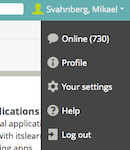
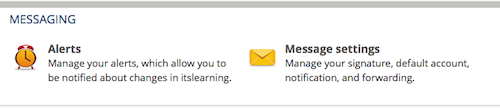

Sprint 0: Course Formalia
Table of Contents
- 1. About this Sprint
- 2. Sprint Goals
- 3. Readings
- 4. Experiential Learning
- 5. Sprint Acceptance Test
1 About this Sprint
 This Sprint introduces the course and the course structure.
This Sprint introduces the course and the course structure.
2 Sprint Goals
Course Structure: The student will be familiar with the structure of the course.
3 Readings
3.1 Course Formalia
3.2 A Note on the Three-Week Roll Call Important
We are mandated to have a roll call in all our courses three weeks after the course starts, because of how the government pays us based on student registrations and student completions of a course. This roll call is a simple show of hands to count how many are actually active in the course. If you do not participate in the roll call, you are considered inactive, and will be deregistered from the course.
For this course we use the “Post on Discussion Board” experiential learning (below) as input to the three week roll call. It is therefore vital that you post the introduction about yourself on the course discussion board within the first three weeks of the course!.
3.3 Assignment Submission
Read and understand the following
3.3.1 Assignment Submission and Dates
- The course is offered during two study periods (1 semester)
- During this time, you are expected complete all assignments and submit them for marking.
- Based on the marking, you may need to complement your submissions with additional material.
- Complementing assignments can be done during the semester, within four weeks of the end of the semester, or in August.
- Complementing assignments after the semester is only allowed if your original submissions were made during the semester and were non-trivial.
- An assignment may only be complemented twice.
- Given these constraints, you are free to plan your submissions as you see fit.
3.3.2 Submissions
Assignment submissions are done via e-mail as a written report or a well-annotated set of presentation slides, unless otherwhise stated.
3.3.3 Resubmissions
In a resubmission, please:
- highlight changes you have made!
- discuss, where applicable, the changes you make
3.3.4 A Note On Confidentiality
We would like you to use a case from your current work experience in the assignments. This makes the assignments more relevant for you, and should also make them easier to do (since you already know much of how things currently work and are able to easily see consequences of changing the current way of working).
You will submit your assignments on the course homepage, where the course managers will review them in order to give you feedback and to examine you on the course. We will not share your work outside of this context, but you should be aware that the course management system is outside of our control.
There are ways to make sensitive information less sensitive. Some generic advice is to:
- Describe the types of stakeholders involved rather than the specific roles.
- Report numbers as percent of a total instead of the absolute numbers (for example, a process step may take x days or y% of the entire process), or express time in some generic “time unit” measure.
- If the motivations for your choices are sensitive, then keep them in a separate document that you can share with the course managers, and share a less sensitive version with your study team.
3.4 A Note on Reading Research Articles
This course suggests a large number of research articles for you to read. This may seem a daunting task for you, but there are some general guidelines that may help you:
- Start by reading the abstract and the conclusions. These will tell you what problem or area the article is addressing, and what the article contributed to solving the problem.
- The articles in this course have – to a large extent – been chosen because they summarise the topics in various ways. To find these summaries, look for lists, figures, and tables in the article. Read these. Read the text around them, or where the figures and tables were referenced, in order to get an explanation of how to interpret them.
Generally, interpret the section of an article as follows:
- The introduction section in an article puts the problem into context, and might give you clues as to how other researchers have solved it before. You can use this section to get a generic overview.
- The related work section should discuss in further detail what other researchers have done that is similar to, or relates to, the article you are reading. This may give you an idea of how others have addressed the problem, and may give you pointers to other articles that you would wish to read.
- The methodology section explains how the study was conducted. Once an article is published (which they naturally are in this course), this is mostly interesting if you distrust some of the results and want to see if anything has been missed when constructing the study.
- The execution and results sections describe how the study was executed (in particular discrepancies from the planned methodology), and what the raw results were. Most of the time, you can safely skip these sections.
- The analysis section “bakes” the results and tries to answer the research questions (address the identified problem). This is probably the most interesting section for you to read.
- The discussion section should raise the view and try to see what the results actually mean in a bigger context. What can you do with the results? “So what?”. This is a tricky section to read, since the authors want you to believe that their results are the best thing invented since hot porridge, but at the same time they have to identify threats to the validity of the study. Validity threats are things that could have influenced the results instead of the sought after effect. This may be things that happened at the same time, inadequacies in the researchers skills and abilities, or inadequacies in the research design. Please remember, when (or if) reading this section, that most of the identified validity threats are minor obstacles (or the article would not have been published) that may impact the scientific view of the results more than the practical significance or usefulness of them.
- The references may give you ideas for other articles that you would like to read.
The bottom line is that when being told to read a lot of research articles, the trick is to learn how to not read them while still getting the gist of them. Hopefully, the “map” described above may provide some help in identifying the parts of an article that are important for you.
3.5 A Further Note on the Recommended Study Pace
Each sprint in this course is estimated to take roughly 20 hours (this amounts to 2 weeks at 1/4 of full time study pace). You may plan this as you see fit, but ultimately you need to spend an average of 10 hours each week to be able to complete the course within the planned semester.
We know that once the initial rush has settled after a couple of weeks it is tempting to put the course on the back burner and get on with your life, your family, and your work. Please don’t! It is much harder to come back to the course later, and the required effort does not get smaller over time – it merely piles up.
Instead, we recommend that you schedule time every week to work on the course.
Some other advice:
- Try to set aside larger continuous blocks of time since it is easier to become engrossed thusly (cf. “Ställtid”, that Bodil Jönsson writes about).
- If you are able to commute to work by bus or train, this is an excellent time to read the research articles – maybe you can temporarily switch to bus or train?
- Talk to your boss. Discuss the assignments with them. Can you tweak the assignments so they become more useful for your company, and can you then get a few hours per week to work on them during office hours?
4 Experiential Learning
4.1 TODO Log in to It’s Learning
Log in to the university’s course management system, It’s Learning, and make sure you can access the course.
Click on your name in the top right corner and select “Your settings”: 
Configure the alerts and the message settings so that you get e-mails whenever we publish anything new info about the course.

Please Note: You need to go in to Message Settings and make sure that the e-mail address is properly configured, and go in to Alerts to activate your notifications. Under Alerts you need to Activate e-mail notifications and select which of “new assignments, news (main dashboard), and your subscriptons (main dashboard)” you want alerts about. Initially, we recommend that you check all of them. If you get too much information, you can always go back and uncheck items later.
4.2 TODO Post on Discussion Board Important Checkpoint
Join the Course Discussion Board (on It’s Learning) and post a short introductory paragraph about yourself. This provides info to your fellow students, and also verifies that you have joined the discussion group and can post to it.
4.3 TODO Buy Course Books
4.3.1 Official Course Book
M.Cohn, Succeeding with Agile: Software Development Using Scrum, Addison-Wesley Professional, 2009. ISBN-10: 0321579364 | ISBN-13: 978-0321579362.
4.3.2 Additional Books
A. Shalloway, G. Beaver, J.R. Trott Lean-Agile Software Development: Achieving Enterprise Agility, Addison-Wesley Professional, 2009. ISBN-10: 0321532899 | ISBN-13: 978-0321532893.
This book is the first I’ve found that actually merges agile with lean, and explains how lean would really work in practice in a software development organisation. It also avoids the trap of focusing too singlemindedly on the in-project agile activities, and instead manages to raise the view to the enterprise level. At times it is too shallow and you are left wanting for more, but overall this is a fairly good book. For the next course revision, it is a likely candidate to be used as main course book.
 J. Rasmusson The Agile Samurai, Pragmatic Bookshelf, 2010. ISBN-10: 1934356581 | ISBN-13: 978-1934356586.
J. Rasmusson The Agile Samurai, Pragmatic Bookshelf, 2010. ISBN-10: 1934356581 | ISBN-13: 978-1934356586.
This book contributes some additional perspectives to the main course book. Reading both will give you fairly ok background knowledge on agile/lean (even if Lean is never explicitly mentioned).
 D. Leffingwell Agile Software Requirements, Addison-Wesley Professional, 2011. ISBN-10: 0321635841 | ISBN-13: 978-0321635846.
D. Leffingwell Agile Software Requirements, Addison-Wesley Professional, 2011. ISBN-10: 0321635841 | ISBN-13: 978-0321635846.
Gives a good overview of what is going on outside the project sprints. Addresses the question how you set up your entire organisation such that you transfer your market strategies and roadmaps into specific user stories that are implementable by sprints.
M. Poppendieck, T. Poppendieck Lean Software Development, Addison-Wesley Professional, 2003. ISBN-10: 0321150783 | ISBN-13: 978-0321150783.
Goes through the lean principles and discuss how they apply to software. I find this book particularly interesting because it is a third of the size of any other book on lean I have read, and yet conveys all the relevant information. Somehow, I can’t help but think that the authors of the other lean books have missed the point.
Your Book
If you find a book that you think should be included here, please send me an e-mail (address in the footer), and tell me about the book and why it should be included.
4.4 TODO AdobeConnect
4.4.1 Equipment and Tutorials
- Get a decent headset. We recommend that you make sure that you have a decent headset with microphone (for example, the USB headset Logitech H390, or equivalent from any other brand). The sound quality in your mobile phone headsets is usually not sufficient.
- Go through the Adobe Connect Tutorials.
4.4.2 Test
The course has a dedicated Adobe Connect meeting room that is always open and available for you to use – for example for collaborating with other students in the course. At certain regular times (to be announced later) teachers in the course are also online here for discussions.
Because of reasons, we do not publish the address to the meeting room here. Instead, you will find it on It’s Learning.
Once you are “in”, there is an audio setup guide that you should go through the first time you visit.
Experience tells us that the first times you connect there will be various problems before you have the audio working. Expect this, and plan accordingly.
4.4.3 Known problems
- On OSX, the right audio source/destination need to be selected before you connect to the Adobe Conenct meeting room. Alt-click on the speaker-icon in the menu bar to check this.
4.5 TODO Get Access to Articles
Since this is, after all, a Master’s level course, we make heavy use of research articles. References to these are listed as Readings under each module.
Because of copyrights, we are not able to publish the actual articles on this site. If you are registered on the course you will gain access to a compendium with the referenced articles.
You will also, as a student, have access to the university’s online database.
4.6 TODO Establish Agile/Lean Backlog
Create an Agile/Lean Backlog. As a start, this backlog ought to contain the sprints from this course, in the order you would like to study them. Add other items into the backlog based on what you would like to learn more about, and what you would like to achieve in your own organisation. Order the items in your Agile/Lean backlog according to your needs and priorities.
This Agile/Lean backlog is revisited in each of the sprints to keep it up to date.
5 Sprint Acceptance Test
You have completed this sprint when you have:
- Viewed the Course Formalia lecture
- Acquired necessary equipment and tested AdobeConnect
- Logged in to It’s learning and set up forwarding to your e-mail address
- Browsed books for the course and ordered the ones you wish to buy.
- Created an Agile/Lean Backlog
5.1 Post on Discussion Board Checkpoint
You are done with this task once you have signed up on the course discussion forum and posted an introduction about yourself within the first three weeks of the course.